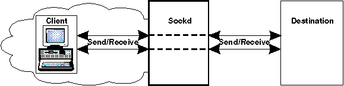
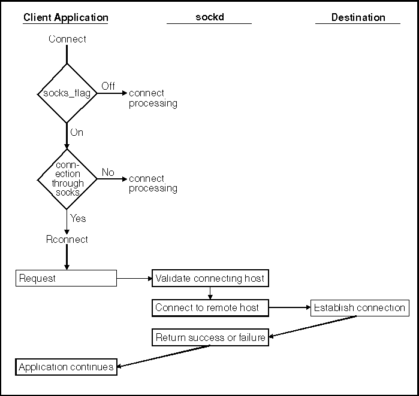

A SOCKS server is a type of firewall that protects computers in a network from access by users outside that network. A SOCKS server is similar to a proxy gateway in that they both work as proxy agents but their approaches are different.
OS/2 SOCKS support for TCP/IP applications allows client applications to
interact with a SOCKS server. OS/2 SOCKSified DLLs get the necessary information
from socks.cfg. The DLL checks to determine if the connection should go
through SOCKS. If socks_flag is on in socks.env and socks.cfg indicates
that the connection should go through socks, then the connection goes through
SOCKS. Otherwise, the connection does not go through SOCKS. The following
figure illustrates how a typical write() to a socket would appear.
A Typical Write() to a SOCKS Server

With SOCKS support, client applications connect to the SOCKS server and then the SOCKS server connects to an external network. The SOCKS server verifies that a host name and user ID are allowed to access an internet.
If you are using a SOCKS server, connect() will call Rconnect(). See connect()
for information about the connect() call. The following figure illustrates
connect().
connect() Request

From the user's point of view (behind the firewall host within the local area network), there is no difference between running SOCKS and the regular client software on a host. All connections at the application level appear to work the same, with the hidden difference that all traffic is passing through sockd on the firewall host. This transparency is achieved through the Socks library routines.
Connect requests are originated by a call to Rconnect() on the internal host. This causes sockd to establish a connection to the remote host and return a success or fail response. At this point, the application can read and write to the socket connection to the firewall and sockd acts as a bridge between the local and external socket connections.